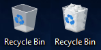

Finding Programs and Files: Deleting a File
The Recycle Bin is located on your Desktop. Double click the icon of the Recycle Bin to open its folder and see what files you previously deleted.
You can see the properties of the deleted files (names, folders in which they initially were placed, date of deletion, etc.,) restore the file (= return them to their original folders,) or empty the Recycle Bin (= permanently deleting everything currently in it.)
On Mac, the Trash Can (the counterpart of the Recycle Bin) may look like this:

An empty and a full-of-garbage Recycle Bins, respectively. Taken from Deleting Files and Folders (Lumen Learning reading).
You will usually find the trash can on your Mac’s Dock (= a row of images of applications or folders at the bottom of the Mac screen.)
 These notes by Miriam Briskman are licensed under CC BY-NC 4.0 and based on sources.
These notes by Miriam Briskman are licensed under CC BY-NC 4.0 and based on sources.